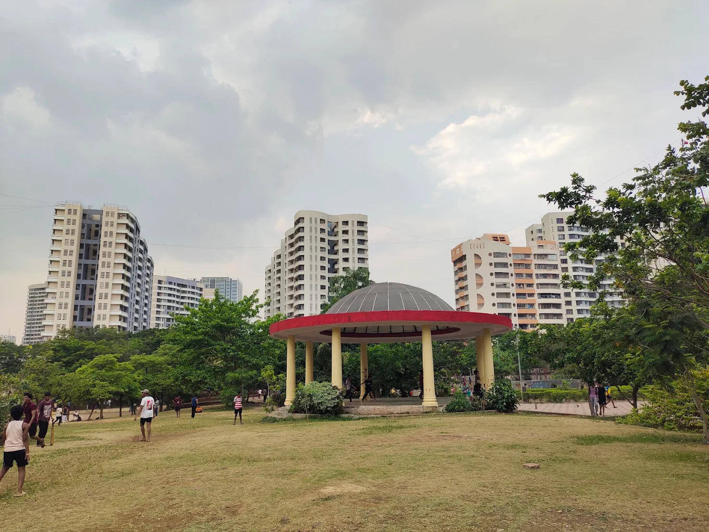

PARK 02
Shahid Hemant Karkare Udyan
Explore the park through field observations, facilities, community survey findings, identified issues, suggested improvements and digital mapping.
Explore Park
EXPLORE PARK 02
Explore the Study
Open a section to view the information collected for this public space.
Park Information
Basic information about the park, its location, surroundings and public-space context.
Open SectionField Observations
Photographic and field-study observations recorded for the selected public space.
Open SectionFacilities
Facilities and amenities visible or discussed by visitors during the study.
Open SectionSurvey
The completed 20-response survey summary for this park.
Open SectionProblems & Improvements
Issues identified through photographs, observations and visitor feedback.
Open SectionDigital Map
The Google My Maps layer created for this park and the study locations.
Open SectionOUR APPROACH
From Observation to Improvement
The study combines field photographs, visitor survey responses and digital mapping to document how the public space is used and where improvements may be useful.
Document the space and visible patterns of use.
Gather structured feedback from 20 respondents.
Digitally mark relevant locations and findings.
Connect the findings to practical improvements.